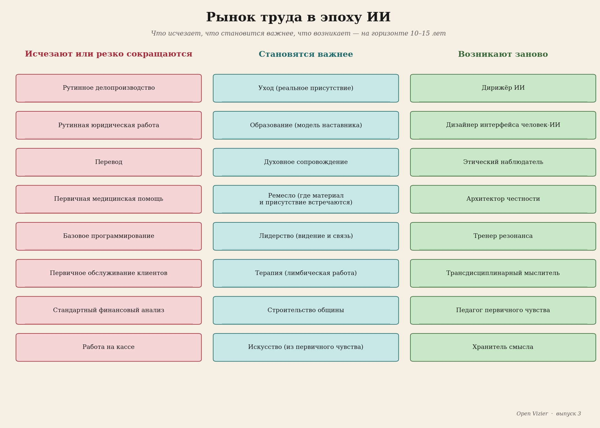
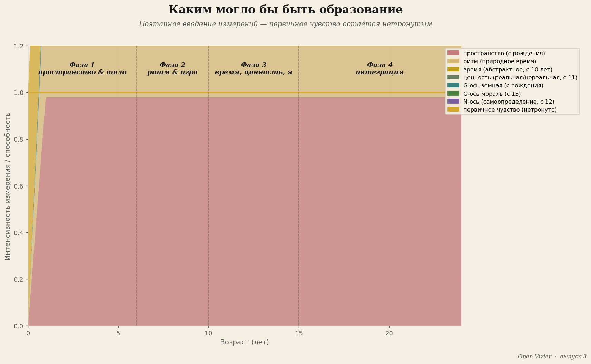
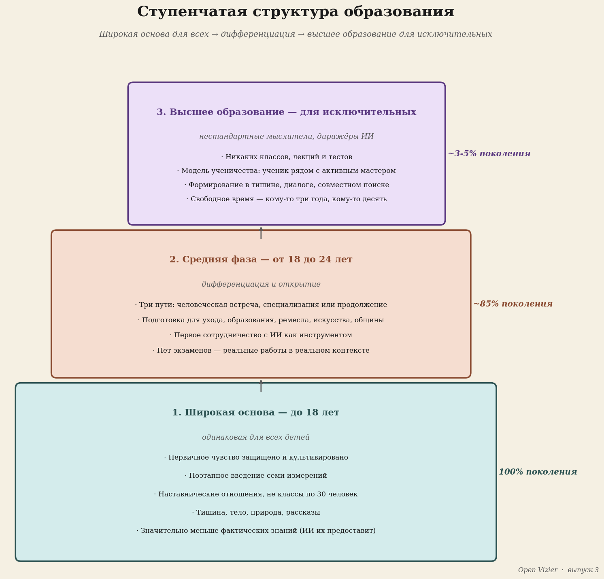
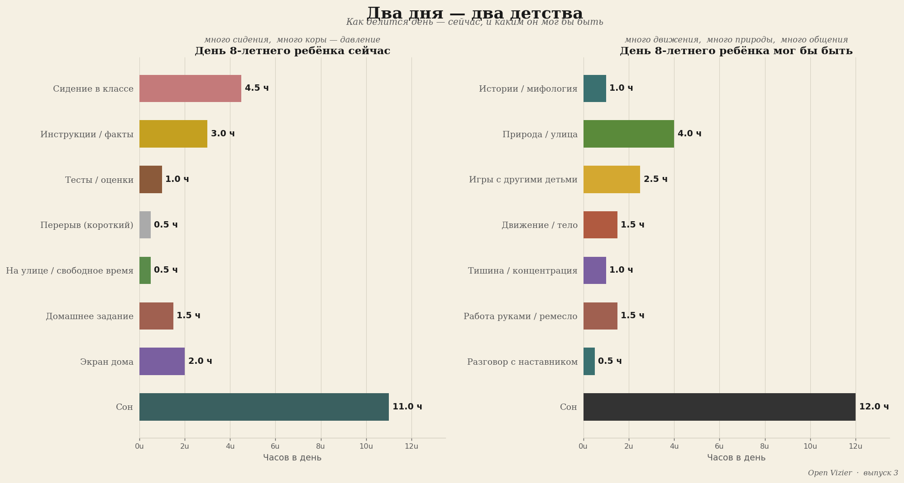
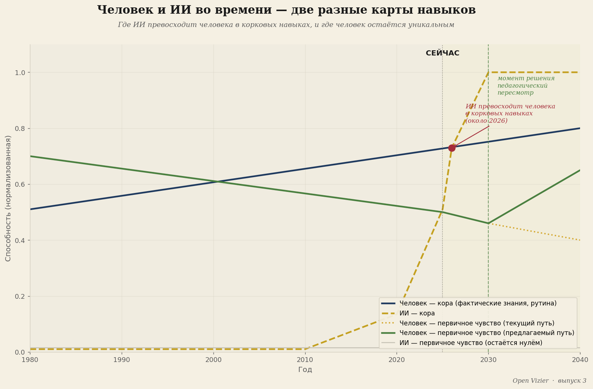
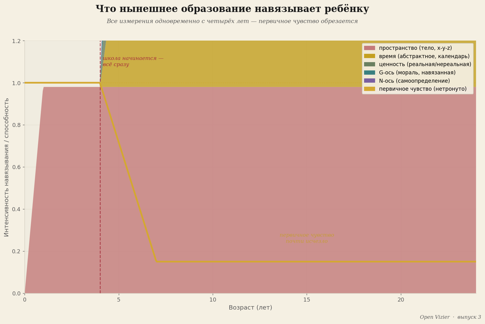

Образование в эпоху ИИ
Почему всё, чему мы сейчас учим, скоро перестанет иметь значение
Будущее · 15 мин чтения

Якобус ван Меркстейн
Есть вопрос, который задаёт каждый политический документ об образовании, — и на который все они отвечают неверно. Вопрос звучит: какие навыки нужны сегодняшнему ученику для рынка труда завтра?
Вопрос поставлен неправильно. Он ставит в центр рынок труда, а рынок труда завтра уже не существует в том виде, который подразумевает этот вопрос. То, что в течение десяти–пятнадцати лет в значительной мере исчезнет, — это именно тот вид труда, для которого западный мир готовит своё население уже полтора века: когнитивные задачи, рутинные, повторяемые, языковые и квантифицируемые. Извлечение фактических знаний. Выполнение стандартного анализа. Структурирование текстов. Следование процедурам. Распознавание паттернов в знакомых областях.
Это область искусственного интеллекта. И ИИ делает это быстрее, дешевле, точнее, круглосуточно — без больничных, без профсоюза, без коллективного договора.
Вопрос, который должно задавать образование, — не «какие навыки нужны ученику для рынка труда завтра?» Вопрос такой: что может человек, чего машина никогда не сможет? И как мы воспитываем детей для того, что остаётся?
Что берёт на себя ИИ

Я инженер и изобретатель. Работаю в материаловедении, преобразовании энергии, промышленных технологиях. У меня нет романтических представлений об ИИ, и я его не боюсь. Я описываю то, что вижу.
Что берёт на себя ИИ: хранение и извлечение знаний. Языковая модель знает больше фактов, чем когда-либо узнает любой человек, и выдаёт их быстрее. Стандартный анализ известных данных. Диагностика в знакомых областях — медицинская, юридическая, техническая — на уровне лучшего специалиста, но за секунды и за долю цены. Производство текстов для стандартных целей. Написание кода для знакомых задач. Перевод, транскрипция, реферирование, классификация.
Это не периферийные навыки. Это ядро того, что многие профессионалы сейчас называют своей работой.
Это ядро того, что многие профессионалы сейчас называют своей работой.
Что ИИ не берёт на себя: прямое считывание человеческой ситуации. Ощущение того, что действительно происходит в разговоре, в отношениях, в организации — за пределами того, что говорится. Понимание мира через телесный опыт. Соединение людей на самом глубоком уровне. Постановку вопросов, которые ещё никто не задавал. Прорыв парадигмы из ощущения, что парадигма не работает.
Корковые навыки исчезают в значительной мере. Навыки первочувства остаются. И именно их образование систематически вытравило.
Четыре направления подготовки к тому, что остаётся

Если ИИ берёт на себя кору в значительной мере, то есть четыре направления, для которых людей ещё нужно готовить.
Первое направление: культивирование первочувства как широкой человеческой базы. Это широта — для всех, а не для элиты. Способность напрямую читать реальность. Присутствовать в ситуации, не убегая в кору. Чувствовать, что действительно происходит с другим человеком, и действовать исходя из этого. Вот что должна уметь медсестра, когда ИИ уже расписал протокол. Что должен уметь учитель, когда ИИ уже персонализировал учебный материал. Что должен уметь судья, когда ИИ уже ранжировал прецеденты. Человеческое суждение в ситуации, укоренённое в прямом ощущении.
Второе направление: нестандартное мышление для лучших из лучших. Ставить действительно новые задачи — не новые вариации известных, а подлинно новые вопросы, лежащие за пределами существующей парадигмы, — это самая редкая человеческая способность, и наиболее ценная в эпоху, когда ИИ решает все известные задачи лучше людей. Это территория исключительного мыслителя: человека, который чувствует, что есть вопрос, который ещё никто не задал. Территория Вегенера, ощутившего, что континенты должны быть вместе, — прежде чем смог это доказать. Фарадея, интуитивно понявшего электромагнетизм без математики для расчётов. Эйнштейна, скачущего на луче света ещё до специальной теории относительности.
Таких людей нельзя создать через систему образования. Но можно уничтожить через неправильную. Нынешняя уничтожает их систематически, вытравливая первочувство и ставя кору в центр. Хорошая система не позволяет их уничтожать.
Третье направление: настоящая человеческая связь. То, чего люди хотят от людей, — это нечто, что машина никогда не сможет дать: переживание того, что тебя действительно видят. Не правильно оценили. Не эффективно помогли. Действительно увидели — на уровне, на котором ты существуешь, а не на уровне, на котором функционируешь. Вот что даёт хороший терапевт, чего плохой заменяет протоколом. Что даёт хороший учитель, чего плохой заменяет передачей информации. Что даёт хороший лидер, чего плохой заменяет менеджментом.
Потребность в настоящей человеческой связи не исчезает по мере того, как ИИ делает больше. Она растёт. Потому что контраст между эффективным машинным взаимодействием и настоящим человеческим присутствием становится острее. Люди, способные предоставить настоящую связь, становятся ценнее, а не менее ценными.
Четвёртое направление: управление ИИ. Машины есть. Они совершенствуются. Вопрос в том, кто ими управляет, для какой цели, с каким суждением. Инженер, использующий системы ИИ для разработки материалов, должен понимать, что машина может и чего не может, — и иметь суждение, чтобы знать это различие в конкретной ситуации. Врач, использующий ИИ-диагностику, должен уметь чувствовать, когда машина ошибается, — не через анализ, а через прямое ощущение, что что-то не так. Менеджер, руководящий командой ИИ-инструментов, должен знать, что такое человеческие решения и что такое машинные, — и почему это различие в определённых ситуациях принципиально.
Управление ИИ требует всех остальных компетенций: первочувства, мышления за пределами парадигмы, человеческой связи и технического знания о машине. Это самая требовательная комбинация. Но именно это двадцать первый век требует от своих лучших людей.
Ступенчатая структура образования

Если четыре направления ясны, следует структура.
До восемнадцати лет: широкая база для всех. Никакого раннего отбора, никакой ранней специализации. Культивирование первочувства как фундамента — статьи с 1-й по 6-ю этого выпуска объясняют, почему и как. Тишина, тело, природа, история, глубокая сосредоточенность, горизонтальная общность. Настоящий контакт с людьми, животными и временами года. Ось W, ось G и ось N — не слишком рано, а поэтапно введённые.
И рядом с этим фундаментом: базовые знания, которые ИИ не заменяет, потому что их нужно прожить, а не загуглить. Говорить. Писать из собственной мысли. Считать как форму мышления, а не как счётную машину. Ремесло — делать что-то руками, телом, что останется в мире, когда ты закончишь. История как рассказ, а не как факты. Этика как разговор о реальных ситуациях, а не как абстрактная система правил.
От восемнадцати до двадцати четырёх лет: дифференциация по таланту и направлению. Здесь пути расходятся. Маршрут к нестандартному мышлению для тех, кто имеет эту способность: свобода, наставничество, глубокая сосредоточенность на сложных нерешённых вопросах, погружение в границы существующего знания. Не магистратура по стандартизированной специальности, а учебный путь, направленный на нахождение новых вопросов.
Не магистратура по стандартизированной специальности, а учебный путь, направленный на нахождение новых вопросов.
Маршрут к человеческой связи для тех, у кого есть к этому склонность: практика, супервизия, обучение обучению прямого контакта. Психиатрия, образование, лидерство, забота — все требуют этого, и все сейчас истерзаны протоколами, заменившими человеческую связь стандартизированными процедурами.
Маршрут к управлению ИИ для тех, кто может с обеих сторон: и техническую сторону машины, и человеческое суждение о том, когда машине можно доверять.
Для исключительных в одном из направлений: программа высшего уровня. Не массовое образование, а интенсивное сопровождение лучших в их конкретном направлении. Система, не предлагающая этого, теряет свой прорывной потенциал ради усреднения, дающего всем образование, но не позволяющего никому достичь превосходства.
Что это требует от учителей и школ

Ступенчатая структура, описанная выше, ясно звучит на бумаге. На практике она натыкается на одну стену, включающую все остальные: на отбор людей, которые должны нести образование.
Учитель, призванный помогать детям культивировать первочувство, сам должен иметь нетронутое первочувство. Это не само собой разумеется. Большинство учителей получили образование в той же системе, которая вытравливает первочувство, — они сами продукт той проблематики, которую должны решать. Педагогическое образование, состоящее преимущественно из дидактических техник, предметных знаний и методов оценивания, производит отбор по слою, наименее определяющему реальный педагогический перенос.
Ребёнок учится не преимущественно тому, что говорит учитель. Он учится у того, кем является учитель — на уровне, более глубоком, чем профессиональная роль. Человек с нетронутым первочувством имеет питающее присутствие, которое ребёнок воспринимает без нужды в словах. Один такой человек в детской жизни способен спасти талант, который иначе был бы потерян. Это не романтическое утверждение. Это структурная логика прямой коммуникации между первочувствами, описанной в статье 4.
Что это конкретно требует: отбирать учителей по присутствию, а не только по диплому. Сопровождать учителей в восстановлении их собственного первочувства как части профессиональной подготовки. Выстраивать школы как сообщества людей, напрямую читающих реальность, а не как производственные машины, поставляющие учебные единицы детям-контейнерам.
Это звучит крупно. Это и есть крупно. Но масштаб необходимых изменений соразмерен масштабу кризиса, который возвещает эпоха ИИ. Маленьких корректировок недостаточно. Косметической реформы недостаточно. То, что нужно, — это ответ на реальный вопрос: для чего существуют люди, если машина делает работу?
Ответ не в том, что люди существуют для машины. Ответ в том, что машина существует для человека — но только если человек знает, что он такое, чего хочет, что чувствует и что ощущает. Это знание начинается с первочувства. Первочувство начинается с первого дня жизни. И оно защищается или уничтожается в последующие годы.
Вопрос, который мы не решаемся задать

Вот вопрос, мимо которого я не хочу пройти.
Если ИИ берёт на себя корковые навыки в значительной мере, а нынешнее образование в основном тренирует корковые навыки, — то сейчас мы готовим детей к работе, которой через десять лет не будет. Не немного меньше будет. Не с поправками ещё будет. Просто: не будет в том виде, для которого мы готовим.
Это утверждение с огромными следствиями. Если оно верно — а в академических кругах оно звучит уже менее спорно, чем пять лет назад, — то самый насущный образовательный вопрос ближайшего десятилетия не в том, как оцифровать нынешнее образование, не как безопасно ввести ИИ в класс, не как адаптировать оценивание. Он в том: как построить полностью иную систему — и насколько быстро?
Политическая смелость, которой это требует, велика. Нынешняя система управляется людьми, обученными в нынешней системе, понимающими нынешнюю систему и имеющими интерес в её сохранении. Фундаментальная реформа требует, чтобы эти люди превзошли самих себя.
Это нелегко. Но это уже не добровольно. Давление технологических изменений вынуждает к выбору — рано или поздно, осознанно или принудительно. Вопрос в том, сделаем ли мы выбор до того, как кризис его продиктует.
Что остаётся

Я заканчиваю самым существенным.
Когда ИИ возьмёт на себя всё, что может кора, остаётся первочувство. Прямая связь с реальностью, которую нельзя симулировать, нельзя воспроизвести, нельзя оцифровать. Считывание ситуации до того, как приходят слова. Ощущение человека, утверждающего одно, но являющегося другим, чем он утверждает. Знание, что есть вопрос, который ещё никто не задал.
Это не нишевый навык для творческой элиты. Это ядро того, что значит быть человеком в мире, полном машин, выполняющих человеческие задачи. Машины делают работу. Человек — для того, что эта работа означает, кому она служит, стоит ли она того.
Цивилизация, изгнавшая это различие из своего образования, не готова к эпохе, которую сама построила. Она создала машину, заменяющую её, и объявила себя лишней. Это промышленная ошибка, но уже второго порядка: ошибка, при которой мы больше не знали, кто мы, и запрограммировали машину как замену.
Кто воспитывает детей для эпохи ИИ, начинает с первых трёх лет жизни, как описывает статья 6. И заканчивает вопросом о том, как семнадцатилетний использует своё первочувство как компас в мире, желающем сделать его другим. Эта связь — от первого года до семнадцатого, от первого «мама, я хочу есть» до первого вопроса, которого никто до него не задавал, — это и есть образовательный путь для двадцать первого века.
Это и самый трудный образовательный путь из всех, что когда-либо предлагались. И единственный, который выдержит эпоху.
Для тех, кто хочет читать дальше: теоретическая основа — первочувство, три слоя мозга, поэтапное введение измерений — содержится в работе Мыслительная база для 7-мерной модели чувств и Манифесте об образовании и воспитании, оба доступны для скачивания на openvizier.org. Отдельный справочник об образовании в эпоху ИИ (ai_tijdperk_onderwijs.md) находится в разработке и будет опубликован на той же странице, как только будет готов.
Кого мы воспитываем в эпоху ИИ?
Вопрос «какие навыки нужны для рынка труда завтра?» поставлен неправильно. Рынок труда завтра уже не существует в том виде, который подразумевает этот вопрос.
«Мы создали машину, заменяющую нас, и объявили себя лишними. Это промышленная ошибка второго порядка.»
Что берёт ИИ — и что остаётся
Корковые навыки исчезают в значительной мере. Навыки первочувства остаются. И именно их образование систематически вытравило.
Четыре направления подготовки
1. Культивирование первочувства — широкая база для всех. Не нишевый навык для элиты.
2. Нестандартное мышление — для лучших: ставить вопросы, которых ещё не задавали. Таких людей нельзя создать. Но можно уничтожить — и нынешняя система делает это систематически.
3. Настоящая человеческая связь — то, чего люди хотят от людей, машина никогда не даст. Потребность в этом с ростом ИИ не исчезает. Она растёт.
4. Управление ИИ — самая требовательная комбинация: первочувство + техническое знание о машине.
Что остаётся человеку
Когда ИИ возьмёт на себя всё, что может кора, остаётся первочувство. Прямая связь с реальностью, которую нельзя симулировать. Считывание ситуации до того, как приходят слова. Знание, что есть вопрос, который ещё никто не задал.
Это не нишевый навык. Это ядро того, что значит быть человеком в мире, полном машин. Машины делают работу. Человек — для того, что эта работа означает, кому служит, стоит ли она того.
Образовательный путь для двадцать первого века начинается с первых трёх лет жизни — от первого «мама, я хочу есть» до первого вопроса, которого никто до него не задавал. Это и самый трудный путь из всех. И единственный, который выдержит эпоху.